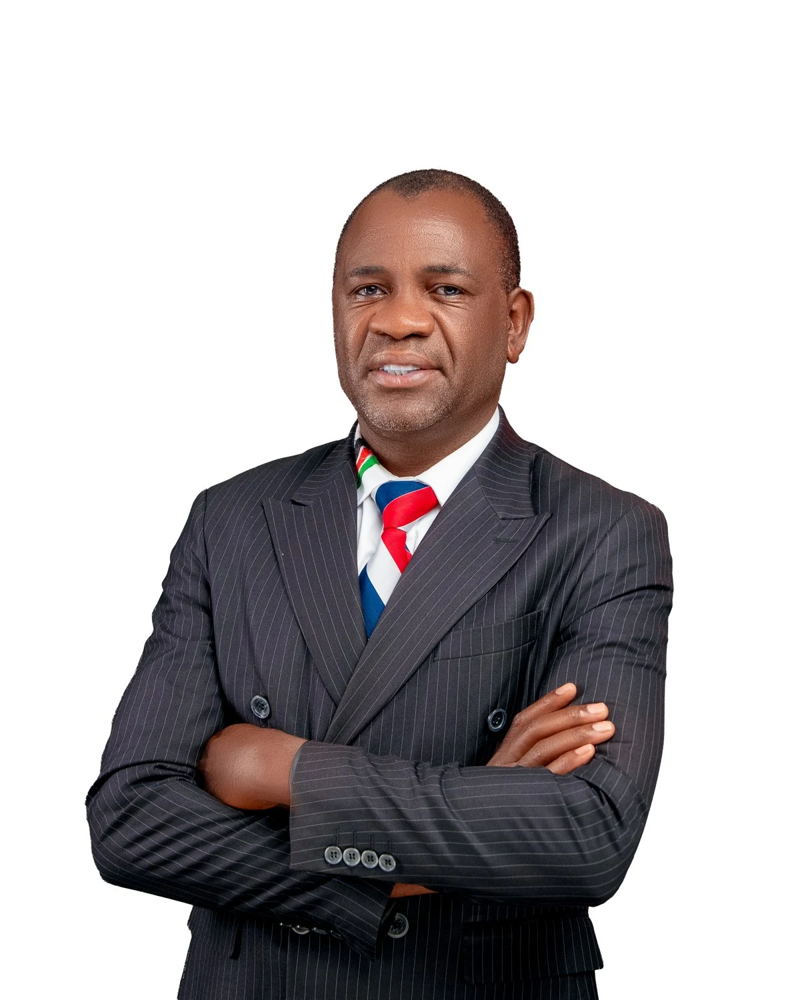
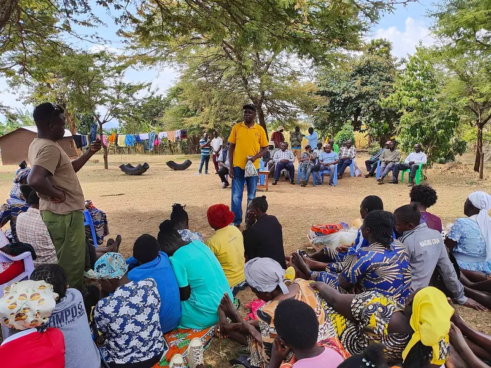
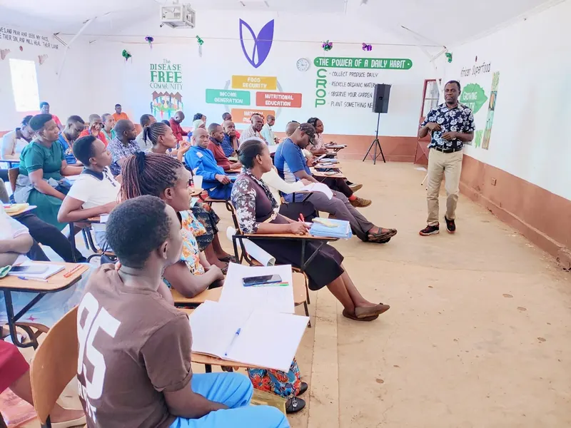

01
Early life
Dawson was born and raised in Lunyu, the son of a Bishop.
Faith was not a weekend ritual in his home. It was part of daily life.
Born and raised in Lunyu. Educated in Kwanza, Kitale and Chicago. Seeking the Kwanza Member of Parliament seat.

Dawson was born and raised in Lunyu, the son of a Bishop.
Faith was not a weekend ritual in his home. It was part of daily life.
Home shaped his values: humility, discipline, service, responsibility, persistence and concern for others.
Chicago exposed him to international humanitarian systems, global governance and different approaches to community development.
Today he supports programmes in education, water, school feeding, livelihoods and community support.


Primary school at Liyavo placed him among the people of Kwanza. They were not abstract to him. They were the neighbourhoods, families and people around him as he grew up.
He is seeking the Kwanza Member of Parliament seat to represent the communities he grew up among.

Vision
To build empowered, self-reliant communities driven by knowledge, innovation and industrial growth, where every individual has the opportunity to thrive and contribute to sustainable development.
To drive sustainable community transformation through:
Tell us where and how a meeting would work best for you.